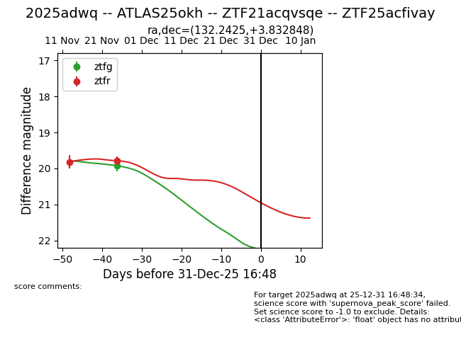
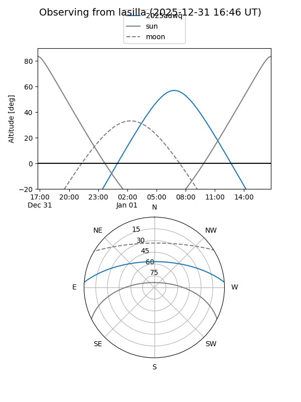
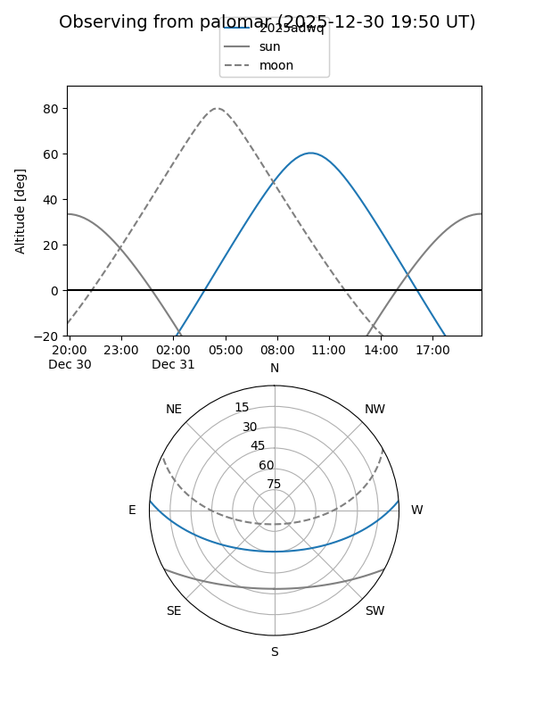

2025adwq
Target 2025adwq at 2025-12-20 12:49
Aliases and brokers:
FINK: fink-portal.org/ZTF21acqvsqe
Lasair: lasair-ztf.lsst.ac.uk/objects/ZTF21acqvsqe
ALeRCE: alerce.online/object/ZTF21acqvsqe
TNS: wis-tns.org/object/2025adwq
YSE: ziggy.ucolick.org/yse/transient_detail/2025adwq
alt names
ZTF21acqvsqe (ztf)
ZTF25acfivay (fink_ztf)
2025adwq (tns,yse)
ATLAS25okh (atlas)
Coordinates:
equatorial (ra, dec) = 132.2425,+3.83285
equatorial (HMS+DMS) = 08:48:58.20,+03:49:58.25
galactic (l, b) = (223.5974,+27.78615)
Flags:
Photometry:
last ztfg=20.35, ztfr=20.00
3 ztfg, 2 ztfr detections
Lightcurve

Visibility


Additional plots